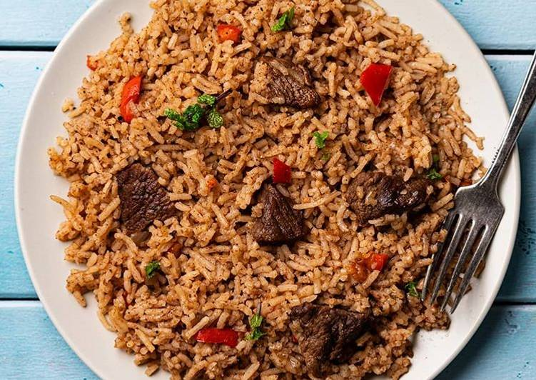

Odin Recipes
Moussaka

Description
This recipe is a combination of flavors and textures.
Moussaka is a traditional Mediterranean dish that layers rich flavors and hearty ingredients into a comforting casserole.
It features a savory filling of ground meat, tomatoes, and aromatic spices, all nestled between layers of tender eggplant and sliced potatoes.
The creamy béchamel sauce on top adds a luxurious touch, perfectly balancing the robust flavors of the meat and vegetables.
This dish is not only delicious but also visually appealing, making it an excellent centerpiece for any meal.
Serve warm, garnished with fresh herbs for a delightful and satisfying dining experience!
Ingredients
- 3 eggplants, peeled and cut lengthwise into 1/2 inch thick slices
- Salt to taste
- 1/4 cup olive oil
- 1 tablespoon butter
- 1 pound lean ground beef
- 2 onions, chopped
- 1 clove garlic, minced
- Ground black pepper to taste
- 2 tablespoon dried parsley
- 1/2 teaspoon fines herbs
- 1/4 teaspoon ground cinnamon
- 1/2 teaspoon ground nutmeg, divided
- 1 (8 ounce) can tomato sauce
- 1/2cup red wine
- 1 egg, beaten
- 4 cups milk
- 1/2 cup butter
- 6 tablespoons all-purpose flour
- Ground white pepper, to taste
- 11/2 cups freshly grated Parmesan cheese
Steps
- Lay eggplant slices on paper towels;sprinkle lightly with salt.
Let sit for 30 minutes to draw out moisture, then pat dry with paper towels.
- Warm olive oil in a skillet over high heat.
Fry eggplant until browned, 2-3 minutes per side. Drain on paper towels; set aside.
- Melt a tablespoon butter in a large skillet over medium heat.
Stir in ground beef, onions and garlic; season with salt and black pepper.
Cook and stir until beef is browned, 8-10 minutes.
-
Add parsley, fines herbs, cinnamon, and a 1/4 teaspoon nutmeg.
Pour in tomato sauce and wine; mix well. Simmer for 20 minutes.
Allow to cool, then stir in beaten egg.
-
Scald milk in a saucepan over medium heat.
-
At the same time, melt 1/2 cup utter in a large skillet over medium heat.
-
Whisk flour into butter until smooth. Lower heat; gradually pour in scalded milk,
whisking constantly until it thickens.
Season bechamel sauce with salt and white pepper.
-
Preheat the oven to 350 degrees F (175 degrees C). Grease a 9x13-inch baking dish.
-
Arrange a single ayer of eggplant in the prepared baking dish.
-
Cover eggplant with meat sauce, then sprinkle 1/2 cup Parmesan cheese on top.
Cover with remaining eggplant and sprinkle 1/2 cup cheese on top.
- Pour bechamel sauce on top and sprinkle with remaining 1/4 teaspoon nutmeg
Cover with remaining cheese.
-
Bake in the preheated oven until bubbly and browned, about 1 hour.
-
Serve hot and enjoy!
Pilau

Description
Pilau is a fragrant rice dish layered with aromatic spices and tender meat,
making it both flavorful and hearty.
Traditionally, the rice absorbs a rich broth seasoned with spices like cumin, cardamom and cinnamon,
which infuses each grain with warmth and depth.
The addition of sautéed onions, garlic, and ginger adds complexity to the flavor,
while whole spices give the dish a distinct aroma.
Ingredients
- 2 cups basmati rice
- 1 pound beef or chicken, cubed
- 1 large onion, finely chopped
- 1 large onion, finely chopped
- 3 cloves garlic, minced
- Tablespoon ginger, minced
- 2 tomatoes, chopped
- 1 teaspoon ground cumin
- 1 teaspoon ground coriander
- 1/2 teaspoon ground turmeric
- 1/2 teaspoon ground turmeric
- 5 whole cloves
- 5 whole cardamom pods
- 2-3 whole bay leaves
- 1 teaspoon black peppercorns
- Salt to taste
- 4 cups beef or chicken broth (or water)
- 2 tablespoons vegetable oil or ghee
- Fresh cilantro for garnish
Steps
- Prepare the Rice: Rinse the basmati rice under cold water until the water runs clear. Set aside.
-
Cook the Meat: In a large pot, heat the oil or ghee over medium heat.
Add the onions and cook until golden brown. Add the garlic, ginger, and meat,
cooking until the meat is browned on all sides.
-
Add Spices and Tomatoes: Add the ground cumin, coriander, turmeric, and cinnamon to the pot.
Stir for a minute to release their aroma,
then add the tomatoes and cook until they soften.
-
Simmer with Rice: Add the rice, broth, whole spices (cloves, cardamom, bay leaves, and peppercorns), and salt.
Bring to a boil, then reduce the heat, cover,
and simmer until the rice is cooked and the liquid is absorbed, about 20 minutes.
-
Serve: Fluff the rice with a fork, garnish with fresh cilantro, and serve warm
Rolex
Description
Rolex is a beloved Ugandan street food that's quick, affordable, and packed with flavor.
The name "Rolex" comes from "rolled eggs," which is exactly what this dish is—an omelette rolled up in a chapati.
This filling and satisfying snack is made with a simple omelette of eggs, tomatoes, onions, and bell peppers,
which are layered onto a soft chapati and rolled into a wrap.
Rolex is perfect as a grab-and-go breakfast, a light lunch, or a tasty snack. It is popular for its fresh ingredients and customizable flavors, making it a favorite in Uganda and beyond.
Try it with extra veggies or a bit of hot sauce for added zest!
Ingredients
- 1 chapati (store-bought or homemade)
- 2 eggs
- 1 small tomato, finely chopped
- 1 small onion, finely chopped
- 1/4 green bell pepper, finely chopped
- Salt to taste
- Black pepper (optional)
- Cooking oil or butter for frying
Steps
-
Prepare the Omelette: In a bowl, beat the eggs with a pinch of salt, black pepper (optional),
and a small amount of chopped tomatoes, onions, and bell peppers.
-
Cook the Omelette: Heat a little oil or butter in a frying pan over medium heat.
Pour in the egg mixture, spreading it evenly in the pan.
Cook until the omelette sets and is slightly golden on the bottom, then flip and cook the other side.
-
Assemble the Rolex:
- Place the chapati on a clean surface.
- Lay the cooked omelette on top of the chapati.
- Add any extra chopped veggies if you like, such as more tomatoes, onions, or bell peppers.
-
Roll It Up: Starting from one end, roll the chapati tightly with the omelette inside.
-
Serve and Enjoy